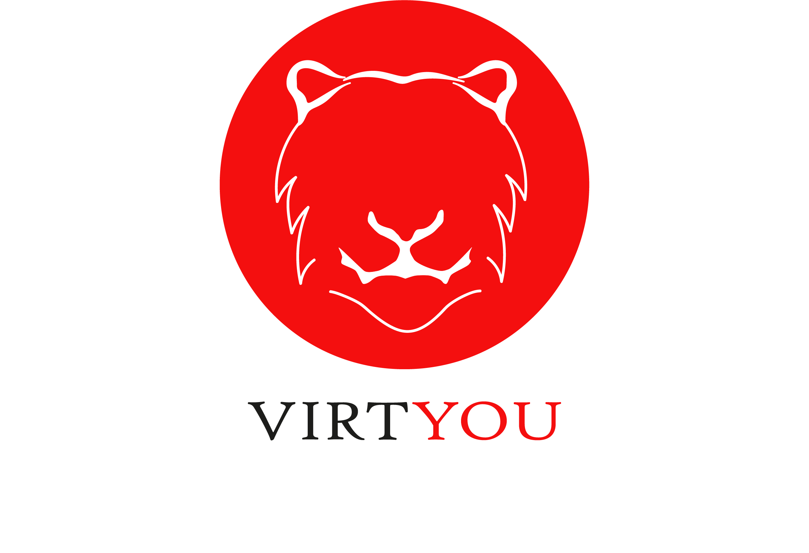
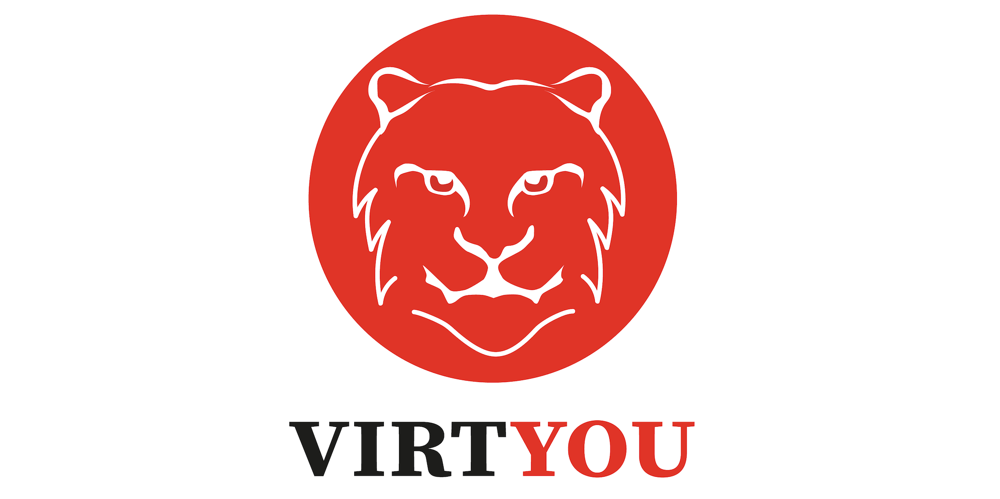
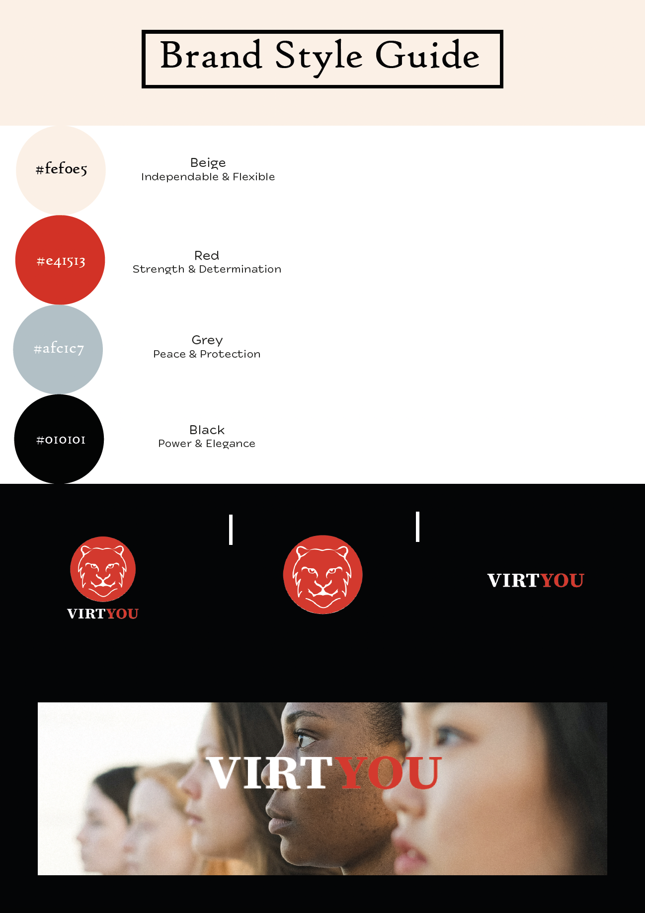
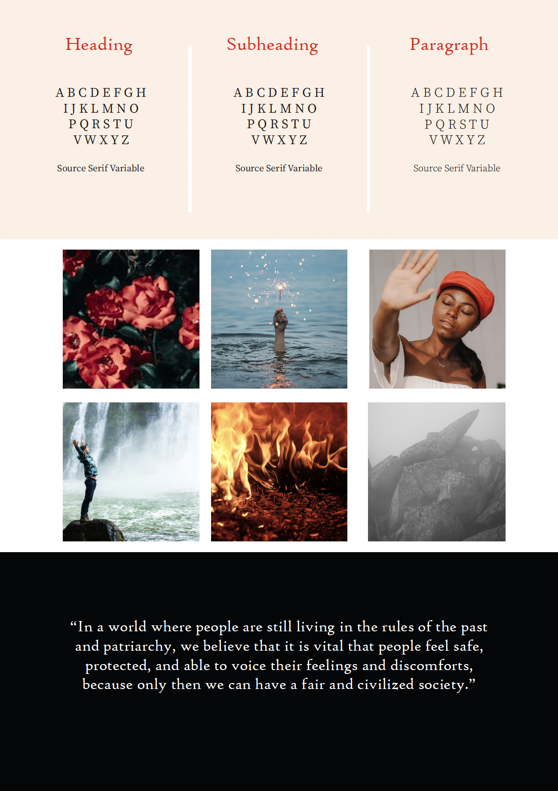

1 Content
Brand Vision
We started creating our brand by making a brand vision. We have chosen the song Michelle got, namely Yellow by Coldplay. In this song, a sentence grabbed our attention because it reminded us of something that we have been struggling with and of a current issue that is going on in the world. The sentence we used is "I drew a line." We immediately thought of setting and stating boundaries and how they are not always respected. Women and minorities still have to deal with men not listening to their boundaries on a daily basis, thinking that they still have a little more say in certain situations than women and minorities do. For some years, this discussion has gotten much more recognition because of #MeToo on mostly sexual boundary-breaking behavior. A few weeks ago, the program BOOS revealed that several men in the program The Voice of Holland had shown sexual boundary-breaking behavior with many contestants. These stories touched us because even though we have never experienced something significant like this ourselves, we have been in situations where we felt like our boundaries weren't respected or uncomfortable and unable to speak up for ourselves. If we look at the world and how it is today, there are still many rules made by men that make it harder or more vulnerable to speak out, not just about sexually transgressive behavior but in general. That's why we came up with the following brand vision.
"In a world where people are still living in the rules of the past and patriarchy, we believe that it is vital that people feel safe, protected, and able to voice their feelings and discomforts because only then we can have a fair and civilized society."
Core Values
1. Respect: We want to contribute to our brand to create more respect among people (also for women and minorities) and hope that this will be the outcome. Because this is an issue that in-volves a lot of respect or, better said, a lack of respect, we intend to always behave re-spectfully to our customers.
2. Self-Determination: In our vision, we mention that we believe that people should be able to make their own decisions and show their limits. It should be their choice and initiative to where they want it to go, especially where they want it to stop. This brand seeks to clarify to our customers that they have the right to this self-determination.
3. Safety: Looking at the issue we are discussing, the world we live in often lacks this security. Cases such as The Voice of Holland show that for years the people who exhibited transgressive behavior could keep doing their thing without being punished for it. Many still feel unsafe when walking, for instance, alone on the street. To bring awareness to this issue, we hope to contribute to more safety.
4. Responsiveness: We want people to respond and speak up. We encourage this. The more people start to voice themselves, share their experiences and stand up for themselves and others, the more used this world will get to this, and changes will be made.
Brand Persona
In marketing, we have decided to focus on a target audience between the ages of 18-and 27, all genders, and living in the Netherlands. Therefore, we will interview people who have this in common. We have several questions to ask in our 15 interviews to gain insight into our brand persona. We came up with the following questions:
General Questions
How old are you?
With what gender do you identify yourself?
Where do you live?
What is your relationship status?
What is your occupation?
Questions About Personality
How much percentage would you say you are introverted and how much percentage are ex-troverted? Why would you say so?
How much percentage would you say you are sensing and how much percentage intuitive? Why would you say so?
How much percentage would you say you are thinking and how much percentage feeling? Why would you say so?
How much percentage would you say you are judging and how much percentage perceiv-ing? Why would you say so?
What would you say are your best character traits? And what are your lesser character traits?
How much percentage would you say, you value work and how much family?
Question About Likes/Goals in Life:
What are your daily activities?
What are your hobbies?
What are your short-term and long-term goals?
What motivates you to achieve these goals?
What makes you happy?
What gets on your nerves/ frustrates you?
What worries you or struggle you within your everyday life?
Questions about preferences:
What are your favorite brands? Why so?
What do you find important when choosing a brand?
What are your turn-offs when it comes to brands, so for example, in their communication, treatment, etcetera?
Questions about media habits:
Which platforms/social media do you use most?
How much time do you spend on these platforms?
What do you use the different platforms for?
When do you spend time on these different platforms?
Questions about our vision and values:
Do you go out in the evening/at night?
After what time do you usually stay inside your house?
When talking about dating, meeting people, being addressed, being in a relationship, cross-ing boundaries, etcetera. What are things you like in general?
What are things you hate?
What are things that frustrate you?
Persona Recordings
Persona Recordings Alisha Wenas (202462)
Persona Recordings Michelle Schepers (202118)
Persona Recordings Kim van den Ham (201956)

Justification Brand Persona
Demographic information: We interviewed youngsters between 18 and 27 years old. All interviewed youngsters live in the south of the Netherlands, and most of them are students, with a social side job, like sales or catering. According to our interview, they all had the problem we are examining, but women have had the problem more than men.
Biography: Most interviewees are students with side jobs and play a sport. Almost all students mentioned watching films and series and being with their friends as things they do in their free time.
Personality: The interviewees all said to be party introverted and extroverted. Most of them thought they were a little bit more extroverted. The feelings of being sensing versus intuitive differed, just like with thinking and feeling. Most participants said to be slightly more sensing than intuitive and slightly more feeling than thinking in everyday life. The participants agreed that they like to think of themselves as perceiving instead of judging, but every human judges sometimes. The participants value both family and work but find a family more important.
Characteristics: The characteristics mentioned above are characteristics that the interviewees mentioned. 'Social' is one of the most mentioned ones.
Quote: The interviewees valued respect for others and found it essential to listen to others instead of thinking and speaking for someone else. Most of them had a strong feeling of justice.
Motivation and frustrations: Most youngsters mentioned they want to finish their studies, save money to live on, and get their own house while enjoying their life and living it to the fullest. On the other hand, lies and unfair behavior are not welcome in the interviewees' lives.
Communication: Many different platforms are being used by our interviewees, mainly Instagram was mentioned a lot. However, TikTok was also mentioned as one of the apps the interviewees spent most of their time on. They use these apps for communication, for example, with friends and classmates, for information, through the news, and for entertainment, for instance, by watching small videos. They use these apps throughout the day, but especially when they wake up before they go to school and during their break from school/work. They estimated to spend three hours a day on all their social media combined.
Brands: Most interviewees find it essential that the brand has a story, with which they mean the brand is transparent in what they do, how to do it, and what they stand for. They want to know the brand is doing 'fair business' and does not make unfair use of materials or people. The mentioned brands are not considered very expensive overall, but the interviewees don't mind paying a little extra when a brand is fair and transparent to them.
Factors influencing buying behavior: Apart from the values mentioned above, a brand should be ethical, trustworthy, of good quality, and good customer service (friendly and fast) before the students consider buying the brand.
Visual Brand Identity
When we look at the personality of our brand, the words that describe it, our unique selling points (all mentioned in our brand identity), and core values, we have come up with the brand name: VirtYou. We use the word virtue, which "is the moral excellence of a person" (What Are Virtues?, 2019). When people are morally excellent, they have good virtues. They are, for instance, kind, respectful and honest. They do not act on their impulses and desires but upon values and principles. This is the core of our brand message. We changed 'Virtue' to 'VirtYou' because our brand encourages people to be morally excellent and confront those who aren't. We directly address anyone who is not behaving respectfully or ethically correct with this name.
Logo Version 1:
We have chosen to create a tiger as a logo because a tiger is known as a symbol of protection, awareness, and confidence, some words that correspond to our brand personality and values.
Red symbolizes action, confidence, courage, and change and is a powerful color that stands out!
We have decided not to use complicated lines or too much detail so that the main subject in our logo (the tiger) gets all the attention.
We have made the name of our brand name black but decided to make the 'YOU' part red because, with our name, we are bringing a message to our target audience. So, by making this, they will feel addressed.
As feedback, we got back that the logo was too detailed, and the color red wasn't bold enough.

Logo Version 2:
In our feedback session, someone suggested that we could leave some parts out, for instance, the eyes. We did this and made the color red as bright as possible.
In the second feedback session, we got back that this logo may be too much horror and the differences between line thickness looked a little weird.

Logo Final Version:
We chose the design that multiple people in the last tutorial pointed out as the best one. We did adjust the lines and made them all the same thickness. We also chose a different font because we felt that the other one did not fit the boldness of our brand. We still wanted to go with a simple font that wouldn't take away the attention of the logo.

Product
Our brand sells three versions of sweaters: Only logo, Logo + Text, and only text. The sentences on the sweaters will be bold statements such as: "Fuck Off," "No is No," "Ask Before You Do," and "My Body My Rules." Firstly, we only wanted to put the logo on our sweaters because that was the only thing we were allowed to do. When our brand is a little more known amongst our customers, and they know what we represent, the logo would remind them of this. By only wearing a sweater with that logo, our customers already show the outside world that they don't appreciate transgressive behavior and want to feel safe, protected, and heard. But because we are a bold brand and received very good quotes when doing our problem interviews, we also wanted to put these on sweaters. Luckily, we heard during our marketing tutorial that this was okay. These statements are short but significant so that no one can avoid them. Now, our customers can choose themselves what they want to wear. For example, men who are supporting this brand but do not feel the need to wear these slogans because they don't feel like these are applying to them, they can still show support by wearing a sweater with just the logo.


Brand Identity
Unique Selling Points
If we look at our brand identity, we have several unique selling points that set us apart from other brands. Our brand is all about the message: the message is key, and therefore, with our sweaters, for example, we will focus on making sure that the feel and design of the sweater matches the feeling of boldness, strength, and empowerment. Therefore, it will not be soft but rather a strong, somewhat rough material. Our brand distinguishes us from many other brands because we contribute to reducing/ or even the disappearance of a worldwide problem, namely women and minorities not feeling safe, protected, and heard while living in a patriarchal world. As a brand, we appeal to emotions associated with our products. Our brand will not be expensive and make people think about the current situation and how to better it through strong and bold quotes. This can sometimes come across as shocking. As a brand, we don't strive for women and minorities to be able to voice their discomforts more than men. We strive for as much safety and protection for women and minorities as men. The same goes for being able to express their feelings and discomforts. Therefore, our brand is inclusive.
Visible Elements:When we came up with the visible elements of our brand, we firstly used the five senses to describe our target, so we could think of elements that would fit these senses. My brand looks like Fire. My brand feels like Empowerment. My brand smells like Burned wood and charcoal. My brand tastes like Cinnamon and peppers. My brand sounds like: Empowering songs (by artists such as Demi Lovato, Sam Smith, Aretha Franklin) / poppy protest songs.


Brand Personality:
We can define the personality of our brand with several words. First, our brand is tough, bold, and confident. The brand is meant to make clear statements even if that means some people will not like it. Secondly, our brand is real, honest, eye-opening, and caring. With our brand, we want to make people more aware of the current situation and, in the end, make it easier to confront others about their behavior. Lastly, our brand is contemporary. We attack an issue that is still very much present.
Cornerstones:
Big Idea:
The big idea of our brand is that women and minorities should stand up for themselves and voice, if not scream out, their limits. Self-determination and a feeling of safety are the most essential things in life, and these things should be normalized. We want to help women and minorities to feel empowered.
Vision:
It should be easy and normal for women and minorities to voice their discomforts and show their values.
Values:
1. Our brand embodies that all women and minorities should feel safe in everyday life. This is an essential must for a happy and healthy life.
2. Our brand embodies that for all women and minorities, it should be self-evident to have self-determination, and it should be easy to show this value to the outside world.
3. Our brand embodies that it is and should be standard for women and minorities to respond to events they find distressing, annoying, or unacceptable. They should be expected to speak their mind and voice their discomfort.
4. Our brand embodies that it is and should be usual to listen to and respect the values of others and to respect the right of self-determination of everyone. It should be obligatory to hear and accept people's wishes about events they are involved in.
Personality:
Our brand is bold, sassy, shocking, but honest and genuine. It communicates power. We want to open everyone's eyes and embody confidence.
Bold, sassy, and shocking: usage of hard colors, lines, and images.
Honest and real: clear communication, transparency, real quotes of women and minorities.
Power: usage of hard colors, lines, and images. Use of confident-looking models.
Eye-opening and confident: Use confident-looking models, real quotes of women and minorities, hard colors, lines, and images.